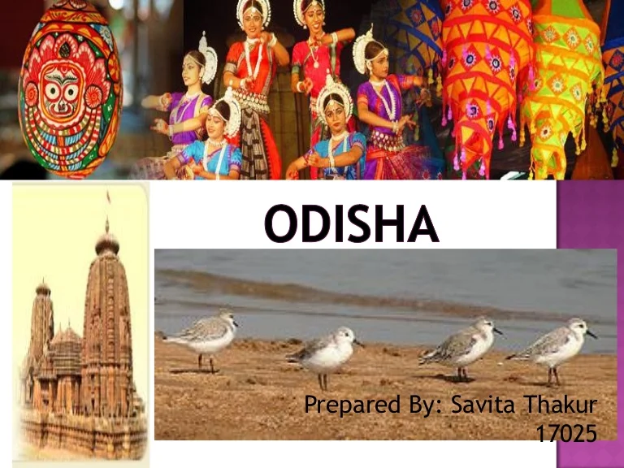
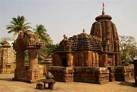
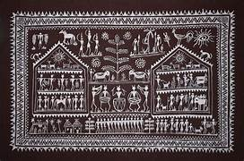
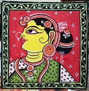

Overview

Odisha is located in the eastern region of India. The state shares its borders with West Bengal on the north-east, Jharkhand on the north, Andhra Pradesh on the south, Chhattisgarh on the west, and the Bay of Bengal on the east.
At current prices, the state’s gross state domestic product (GSDP) was estimated to be Rs. 7.74 trillion (US$ 105.05 billion) in 2022-23. Odisha’s GSDP is expected to increase at a CAGR of 11.97% between 2016-17 and 2022-23.
According to the DPIIT, cumulative FDI inflows in the state stood at US$ 162.71 million between October 2019-June 2023.
Odisha has emerged as the key state with regard to the mineral and metal-based industries. In 2019-20^, Odisha contributed to the largest share (43.0%) of mineral production (by value) in India. The value of minerals produced in the state reached Rs. 87,086 crore (US$ 10.78 billion) in 2021-22.
Culture and Heritage


The stunning architectures, history, dialects, vibrant art music and dance forms make Odisha ever sprightly state of India. Odisha (formerly known as Orissa), the battleground for the famous Kalinga war fought by Ashoka the Great, lies on the country's east coast. When the sun rises here, it rises over a land of temples thriving on top of a solid foundation laid by heritage. Life is uncomplicated, laid back and it doesn't take much to find some hush and quiet here. As opposed to the hustle and bustle of metropolitan concrete jungles, Odisha comes as a sigh of relief to the one seeking the peace of mind. Be it the temples of the capital city Bhubaneswar, the Buddhist Shanti Stupa of Dhaulagiri Hills or exotic birds that can be spotted at Asia's largest brackish water lagoon Chilika Lake, Odisha is worth paying a visit!
ART



The 16th century witnessed the compilation of literature within music. The four important treatises written during that time are Sangitamava Chandrika, Natya Manorama, Sangita Kalalata and Gita Prakasha. Orissi music is a combination of four distinctive kinds of music, namely, Chitrapada, Dhruvapada, Panchal and Chitrakala. When music uses artwork, it is known as Chitikala. A unique feature of Oriya music is the Padi, which consists of singing of words in a fast beat.
Orissi music is more than two thousand five hundred years old and comprises a number of categories. Of these, the five broad ones are Tribal Music, Folk music, Light Music, Light-Classical Music and Classical Music. Anyone who is trying to understand the culture of Odisha must take into account its music, which essentially forms a part of its legacy.
In the ancient times, there were saint-poets who wrote the lyrics of poems and songs that were sung to rouse the religious feelings of people. It was by the 11th century that the music of Odisha, in the form of Triswari, Chatuhswari, and Panchaswari, underwent transformation and was converted into the classical style.